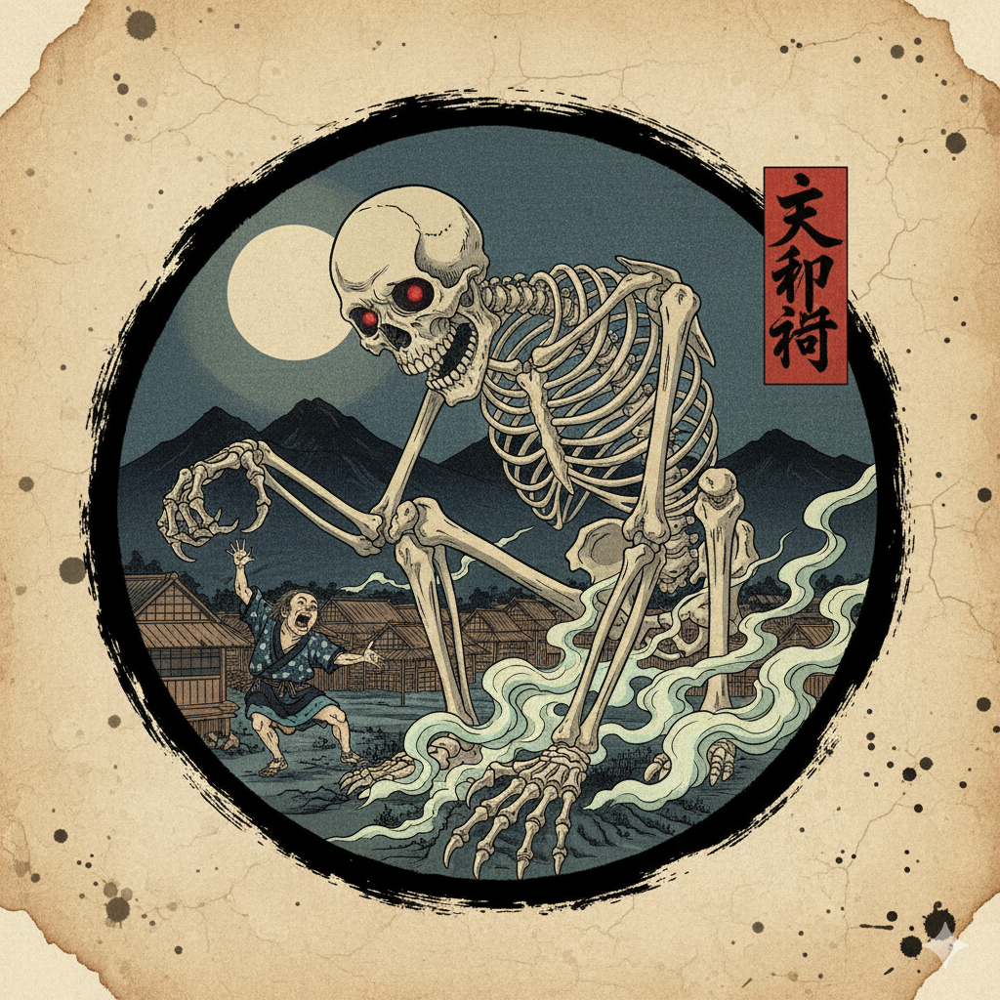
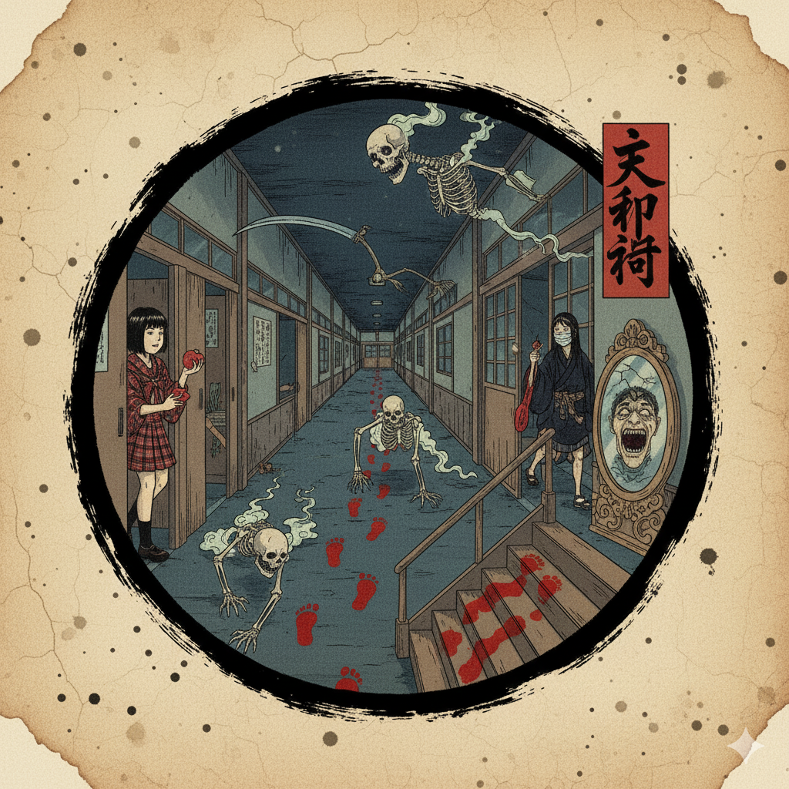
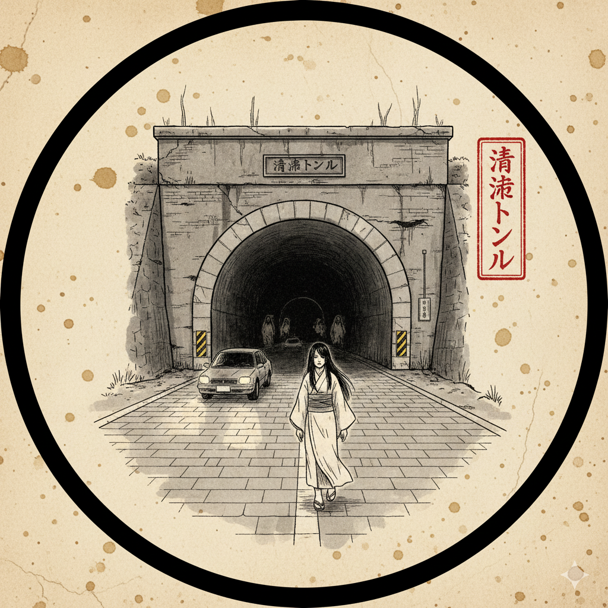

❮ Voltar para Lendas
Kuchisake-onna

A "Mulher da Boca Cortada" é uma das lendas urbanas mais famosas do Japão.
Conta a história do espírito de uma mulher que foi brutalmente mutilada por seu marido ciumento. Ele
cortou sua boca de orelha a orelha, perguntando: "Quem vai te achar bonita agora?".
Ela agora vaga pelo Japão, usando uma máscara cirúrgica (o que é comum lá). Se ela encontra alguém,
geralmente uma criança ou estudante, ela pergunta: "Watashi, kirei?" ("Eu sou bonita?").
Se a pessoa diz "Não", ela a mata imediatamente com uma tesoura. Se a pessoa diz "Sim", ela tira a
máscara, revela seu rosto e pergunta: "E agora?". Se a vítima gritar ou disser "Não", ela é morta. A
única forma de escapar é dando uma resposta vaga como "Você é normal" ou "Mais ou menos", o que a
deixa confusa e dá tempo para fugir.
Hanako-san

Hanako-san, ou "Hanako do Banheiro", é uma lenda escolar popular no Japão. É o espírito de uma jovem
que assombra o banheiro feminino.
As lendas dizem que para invocá-la, deve-se ir ao banheiro feminino do terceiro andar, bater três
vezes na porta do terceiro boxe e perguntar: "Você está aí, Hanako-san?".
Se ela estiver lá, uma voz responderá "Sim, estou". Em algumas versões, uma mão pálida abrirá a porta
e puxará a pessoa para dentro do vaso sanitário, levando-a para o inferno. Em outras, ela é um
fantasma mais inofensivo, mas ainda assim aterrorizante.
Teke Teke

O Teke Teke é o espírito vingativo de uma jovem (às vezes chamada Kashima Reiko) que morreu de forma
trágica.
Ela foi empurrada (ou caiu) nos trilhos de um trem e foi cortada ao meio. Seu ódio e agonia eram tão
grandes que seu torso voltou como um fantasma.
Ela se move usando as mãos ou cotovelos, fazendo um som de "teke-teke" (o som de suas unhas ou ossos
no chão). Apesar de não ter pernas, ela se move incrivelmente rápido e caça pessoas à noite. Se ela
te pegar, ela te cortará ao meio com uma foice para que você sinta a dor dela.
Gashadokuro

O Gashadokuro é um Yokai, um esqueleto gigante, dez vezes maior que uma pessoa comum, criado a partir dos ossos de pessoas que morreram de fome ou em batalha sem um enterro adequado.
Ele vaga à noite, fazendo um som de "gachi gachi" (o ranger dos ossos), e ataca viajantes solitários para arrancar suas cabeças e beber seu sangue. É invisível até que esteja prestes a atacar.
A única forma de se proteger é ouvir o som de seus ossos antes que ele apareça. É um símbolo da fome e da miséria que a guerra e a falta de cuidado com os mortos podem causar.
Gakkou no Nanafushigi

Os "Sete Mistérios da Escola" são um conjunto de lendas urbanas sobre fenômenos sobrenaturais que ocorrem em escolas japonesas, variando de região para região.
Os mistérios mais comuns incluem: o espelho que mostra o futuro, a sala de música onde um piano toca sozinho, a escada que leva ao inferno, e claro, a Hanako-san no banheiro.
Acredita-se que se um aluno descobrir ou resolver todos os sete mistérios, algo terrível acontecerá com a escola ou com ele próprio.
Túnel Kiyotaki

O Túnel Kiyotaki, em Quioto, é um local real e famoso por ser mal-assombrado. Foi construído em 1927 e dizem que cada metro do túnel custou a vida de um trabalhador escravo.
Lendas locais afirmam que o túnel tem 444 metros de comprimento (o número 4 é associado à morte no Japão) e que seu comprimento muda dependendo da hora do dia.
Os fantasmas dos trabalhadores mortos e de uma mulher que se suicidou no local são frequentemente vistos. Se você olhar no espelho retrovisor e vir um fantasma, dizem que você terá um acidente fatal.